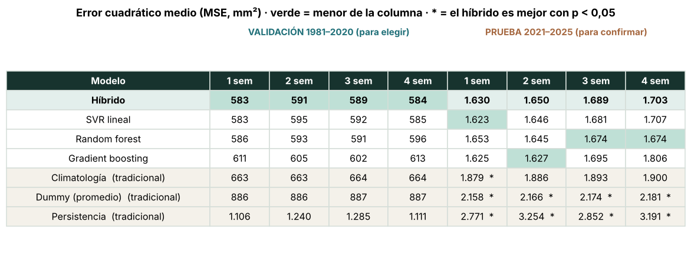
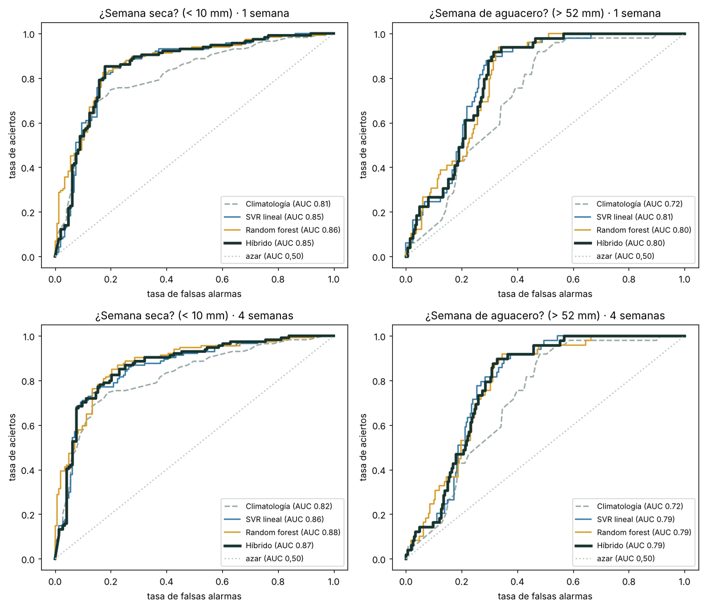
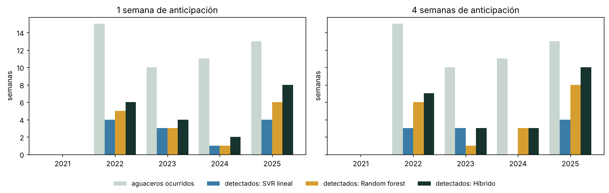

5. Modelo híbrido: SVR + random forest#
Los capítulos 3 y 4 mostraron dos modelos con fortalezas distintas. El SVR lineal acierta bien el nivel normal de la temporada, pero se queda corto en las semanas lluviosas. El random forest capta umbrales y combinaciones de pistas, pero es más ruidoso. Este capítulo evalúa si combinarlos da un pronóstico mejor que cada uno por separado.
Cómo se combina (apilamiento o stacking). Un «juez» pondera los dos pronósticos:
Los pesos se aprenden por mínimos cuadrados no negativos, como propone Breiman (1996) para el apilamiento en regresión (Wolpert, 1992), solo con pronósticos fuera de muestra de la validación cruzada temporal (simulacros 1981–2020). Nunca se usa la prueba 2021–2025. Para comparar en validación con honestidad, en cada simulacro el juez solo conoce los simulacros anteriores.
Candidatos. SVR lineal, random forest, el híbrido y un gradient boosting por histogramas, que es el mismo algoritmo que XGBoost (modo hist) y LightGBM. Sus hiperparámetros, como los del random forest, se eligen por validación cruzada. Referencias tradicionales: climatología, promedio (Dummy) y persistencia semanal.
Criterio de elección, fijado antes de ver los resultados:
Se elige el modelo con menor error cuadrático medio (MSE) en validación, en promedio sobre los horizontes de 1 a 4 semanas.
Si la diferencia con el segundo es menor de 1 %, desempata la detección de aguaceros en validación (índice CSI).
La prueba 2021–2025 se usa una sola vez y solo para confirmar que el modelo elegido funciona con datos nuevos. Elegir el modelo mirando la prueba sería ajustarlo al examen.
Semana de aguacero: lluvia mayor que el percentil 90 de la lluvia semanal de entrenamiento (unos 52 mm).
import sys, warnings, time
from pathlib import Path
sys.path.insert(0, str(Path.cwd().parent))
warnings.filterwarnings("ignore")
import numpy as np
import pandas as pd
import matplotlib.pyplot as plt
from sklearn.impute import SimpleImputer
from sklearn.linear_model import LogisticRegression
from sklearn.metrics import roc_auc_score, roc_curve
from sklearn.pipeline import Pipeline
from sklearn.preprocessing import StandardScaler
from src import config as cfg, modelado as md, hibrido as hb
np.random.seed(cfg.SEED)
plt.rcParams["figure.dpi"] = 110
df = pd.read_csv(cfg.DATA_PROCESSED / cfg.ARCHIVO_DATOS, parse_dates=["fecha"])
HORIZONTES = [1, 2, 3, 4] # horizonte confiable n = 4 semanas (capítulo 3)
MODELOS = ["SVR lineal", "Random forest", "Gradient boosting", "Híbrido"]
REFERENCIAS = ["Climatología", "Dummy (promedio)", "Persistencia"]
COLOR = {"Climatología": "#9AA9A3", "Dummy (promedio)": "#C9B79C", "Persistencia": "#B98B73", "SVR lineal": "#3A7CA5",
"Random forest": "#D69E2E", "Gradient boosting": "#8E6CB0", "Híbrido": "#17332E"}
5.1 Ajuste en los simulacros#
R = {}
for h in HORIZONTES:
t0 = time.time()
tabla = md.tabla_modelado(df, h)
cols = md.columnas_predictoras(tabla)
tr, te = md.particion_cronologica(tabla, h)
tr = tr.sort_values("fecha").reset_index(drop=True); te = te.sort_values("fecha").reset_index(drop=True)
sp = list(md.cv_temporal(tr.fecha, gap_dias=cfg.DIAS_POR_SEMANA * h + cfg.LATENCIA_DIAS))
_, par_svr, _, _ = md.ajustar_svr(tr, cols, sp)
par_rf, _ = hb.elegir_por_cv(hb.pipeline_rf, hb.GRILLA_RF, tr, cols, sp)
par_gb, _ = hb.elegir_por_cv(hb.pipeline_gb, hb.GRILLA_GB, tr, cols, sp)
oof = hb.fuera_de_muestra(tr, cols, sp, h, par_svr, par_rf, par_gb)
juez = hb.ajustar_juez(oof["SVR lineal"], oof["Random forest"], oof.y) # juez final: todos los simulacros
# Modelos finales: todo el entrenamiento 1981-2020; pronóstico de la prueba (una sola vez)
svr = md.pipeline_svr(C=par_svr["C"], log_objetivo=bool(par_svr["log1p"]), loss=par_svr["loss"]).fit(tr[cols], tr.y)
rf = hb.pipeline_rf(**par_rf).fit(tr[cols], tr.y)
gbm = hb.pipeline_gb(**par_gb).fit(tr[cols], tr.y)
P = pd.DataFrame({"fecha": te.fecha, "y": te.y, "Climatología": md.climatologia(tr, h=h)(te),
"Dummy (promedio)": tr.y.mean(), "Persistencia": te.base_persistencia.values,
"SVR lineal": svr.predict(te[cols]), "Random forest": rf.predict(te[cols]),
"Gradient boosting": gbm.predict(te[cols])})
P["Híbrido"] = hb.aplicar_juez(juez, P["SVR lineal"], P["Random forest"])
# Intervalo 95 % del híbrido: residuos del último simulacro (conformal)
ult = oof[oof.fold == oof.fold.max()]
cal = {q: float(np.quantile(ult.y - ult["Híbrido"], q)) for q in (0.025, 0.05, 0.5, 0.95, 0.975)}
P["inf95"] = np.maximum(0, P["Híbrido"] + cal[0.025]); P["sup95"] = P["Híbrido"] + cal[0.975]
R[h] = dict(cols=cols, tr=tr, te=te, sp=sp, oof=oof, P=P, juez=juez, cal=cal, umbral=float(tr.y.quantile(0.90)),
par_svr=par_svr, par_rf=par_rf, par_gb=par_gb)
print(f"h = {h}: híbrido = {juez['b']:.2f} + {juez['w_svr']:.2f}·SVR + {juez['w_rf']:.2f}·RF "
f"(suma de pesos {juez['w_svr'] + juez['w_rf']:.2f}) | RF {par_rf} | GB {par_gb} | {time.time() - t0:.0f} s")
print(f"Umbral de aguacero (P90 de entrenamiento): {R[1]['umbral']:.1f} mm")
h = 1: híbrido = -0.22 + 0.69·SVR + 0.45·RF (suma de pesos 1.14) | RF {'max_depth': 8, 'min_samples_leaf': 5, 'max_features': 0.33} | GB {'loss': 'squared_error', 'learning_rate': 0.03, 'max_leaf_nodes': 7, 'min_samples_leaf': 50} | 77 s
h = 2: híbrido = -0.93 + 0.55·SVR + 0.64·RF (suma de pesos 1.19) | RF {'max_depth': None, 'min_samples_leaf': 20, 'max_features': 1.0} | GB {'loss': 'poisson', 'learning_rate': 0.03, 'max_leaf_nodes': 7, 'min_samples_leaf': 50} | 78 s
h = 3: híbrido = -1.01 + 0.63·SVR + 0.56·RF (suma de pesos 1.19) | RF {'max_depth': 8, 'min_samples_leaf': 20, 'max_features': 1.0} | GB {'loss': 'poisson', 'learning_rate': 0.03, 'max_leaf_nodes': 7, 'min_samples_leaf': 50} | 78 s
h = 4: híbrido = -0.90 + 0.78·SVR + 0.42·RF (suma de pesos 1.20) | RF {'max_depth': None, 'min_samples_leaf': 20, 'max_features': 1.0} | GB {'loss': 'squared_error', 'learning_rate': 0.03, 'max_leaf_nodes': 7, 'min_samples_leaf': 50} | 78 s
Umbral de aguacero (P90 de entrenamiento): 52.1 mm
Interpretación. En los cuatro horizontes el juez da peso a los dos modelos, entre 0,55 y 0,78 al SVR y entre 0,42 y 0,64 al random forest, con un intercepto cercano a cero. La suma de los pesos está entre 1,14 y 1,20, es decir, el híbrido estira el pronóstico combinado entre un 14 % y un 20 % hacia arriba. El motivo se explica en la sección 5.7. Los hiperparámetros del random forest y del gradient boosting se eligieron en cada horizonte con la misma validación cruzada; a 2 semanas el random forest elegido difiere del capítulo 4 porque aquí el criterio es el MSE y no el RMSE medio por simulacro.
5.2 Elección con la validación (simulacros 1981–2020)#
Se comparan los pronósticos fuera de muestra de los simulacros 2 a 5 (unas 1.390 semanas), las mismas para todos los modelos.
filas = []
for h in HORIZONTES:
V = R[h]["oof"]; V = V[V.fold >= 1]
for m in REFERENCIAS + MODELOS:
ag = [hb.tabla_aguaceros(g.y, g[m], g.umbral.iloc[0]) for _, g in V.groupby("fold")]
filas.append({"h": h, "modelo": m, "MSE": hb.mse(V.y, V[m]),
"POD": np.mean([a["POD"] for a in ag]), "FAR": np.mean([a["FAR"] for a in ag]), "CSI": np.mean([a["CSI"] for a in ag]),
"AUC_seca": np.mean([roc_auc_score(g.y < 10, -g[m]) for _, g in V.groupby("fold")]) if m not in ("Dummy (promedio)",) else np.nan,
"AUC_aguacero": np.mean([roc_auc_score(g.y > g.umbral, g[m]) for _, g in V.groupby("fold")]) if m not in ("Dummy (promedio)",) else np.nan})
VAL = pd.DataFrame(filas)
tabla_val = VAL.pivot(index="modelo", columns="h", values="MSE").loc[MODELOS + REFERENCIAS]
tabla_val["promedio 1-4"] = tabla_val.mean(axis=1)
print("Semanas comparadas en validación (simulacros 2 a 5):", {h: int((R[h]["oof"].fold >= 1).sum()) for h in HORIZONTES})
print("MSE en validación (mm²), menor es mejor:")
tabla_val.round(0)
Semanas comparadas en validación (simulacros 2 a 5): {1: 1390, 2: 1389, 3: 1388, 4: 1388}
MSE en validación (mm²), menor es mejor:
| h | 1 | 2 | 3 | 4 | promedio 1-4 |
|---|---|---|---|---|---|
| modelo | |||||
| SVR lineal | 583.0 | 595.0 | 592.0 | 585.0 | 589.0 |
| Random forest | 586.0 | 593.0 | 591.0 | 596.0 | 592.0 |
| Gradient boosting | 611.0 | 605.0 | 602.0 | 613.0 | 608.0 |
| Híbrido | 583.0 | 591.0 | 589.0 | 584.0 | 587.0 |
| Climatología | 663.0 | 663.0 | 664.0 | 664.0 | 664.0 |
| Dummy (promedio) | 886.0 | 886.0 | 887.0 | 887.0 | 886.0 |
| Persistencia | 1106.0 | 1240.0 | 1285.0 | 1111.0 | 1185.0 |
# Detección de aguaceros y capacidad de ordenar las semanas, en validación (promedio de horizontes 1 a 4)
VAL[VAL.modelo.isin(MODELOS + ["Climatología"])].groupby("modelo")[["POD", "FAR", "CSI", "AUC_seca", "AUC_aguacero"]].mean().loc[MODELOS + ["Climatología"]].round(3)
| POD | FAR | CSI | AUC_seca | AUC_aguacero | |
|---|---|---|---|---|---|
| modelo | |||||
| SVR lineal | 0.131 | 0.254 | 0.118 | 0.880 | 0.814 |
| Random forest | 0.157 | 0.540 | 0.130 | 0.881 | 0.812 |
| Gradient boosting | 0.290 | 0.527 | 0.215 | 0.874 | 0.807 |
| Híbrido | 0.350 | 0.495 | 0.248 | 0.884 | 0.817 |
| Climatología | 0.062 | 0.518 | 0.058 | 0.871 | 0.789 |
# Aplicación del criterio fijado antes de ver resultados
prom = tabla_val.loc[MODELOS, "promedio 1-4"].sort_values()
csi = VAL[VAL.modelo.isin(MODELOS)].groupby("modelo")["CSI"].mean()
primero, segundo = prom.index[0], prom.index[1]
dif = (prom.iloc[1] - prom.iloc[0]) / prom.iloc[0]
ELEGIDO = primero if dif >= 0.01 else max([primero, segundo], key=lambda m: csi[m])
print(f"Menor MSE medio en validación: {primero} ({prom.iloc[0]:.1f}) | segundo: {segundo} ({prom.iloc[1]:.1f}) | diferencia {dif:.2%}")
if dif < 0.01:
print(f"Empate (< 1 %): desempata el CSI de validación → {primero} {csi[primero]:.3f} frente a {segundo} {csi[segundo]:.3f}")
print("MODELO ELEGIDO:", ELEGIDO)
print("Puesto del gradient boosting en validación por horizonte:",
{h: int(tabla_val[h].loc[MODELOS].rank().loc["Gradient boosting"]) for h in HORIZONTES}, "(1 = mejor de 4)")
Menor MSE medio en validación: Híbrido (586.7) | segundo: SVR lineal (588.7) | diferencia 0.34%
Empate (< 1 %): desempata el CSI de validación → Híbrido 0.248 frente a SVR lineal 0.118
MODELO ELEGIDO: Híbrido
Puesto del gradient boosting en validación por horizonte: {1: 4, 2: 4, 3: 4, 4: 4} (1 = mejor de 4)
Interpretación. En validación, el híbrido tiene el menor MSE promedio de los cuatro modelos (586,7 mm² frente a 588,7 del SVR, 592 del random forest y 608 del gradient boosting) y es el menor en los cuatro horizontes (a 1 semana, empatado con el SVR en 583). Como la ventaja sobre el SVR es menor de 1 %, el criterio desempata con la detección de aguaceros: el CSI del híbrido en validación es 0,248, frente a 0,118 del SVR. El híbrido detecta el 35 % de los aguaceros (POD), frente al 13 % del SVR y el 16 % del random forest, y con menos falsas alarmas que el random forest (49,5 % frente a 54,0 %). También tiene los mayores AUC en validación (0,884 para semana seca y 0,817 para aguacero). El modelo elegido es el híbrido.
El gradient boosting, que es el mismo algoritmo que XGBoost, quedó último entre los cuatro modelos de ML en los cuatro horizontes de validación.
5.3 Confirmación en la prueba 2021–2025#
La prueba se usa una sola vez. La prueba de Diebold-Mariano compara semana a semana los errores al cuadrado de dos pronósticos, corrige por la autocorrelación y dice si la diferencia es real (p < 0,05) o puede ser suerte.
filas = []
for h in HORIZONTES:
P = R[h]["P"]; y = P.y.values; bl = max(8, h + 4)
for m in REFERENCIAS + MODELOS:
s, p = hb.diebold_mariano(y, P[m], P["Híbrido"], h) if m != "Híbrido" else (np.nan, np.nan)
ic = hb.bootstrap_bloques(lambda i: 1 - np.sqrt(hb.mse(y[i], P["Híbrido"].values[i]) / hb.mse(y[i], P[m].values[i])), len(y), bl) if m != "Híbrido" else (np.nan, np.nan)
filas.append({"h": h, "modelo": m, "MSE": hb.mse(y, P[m]), "mejora_RMSE_hibrido": 1 - np.sqrt(hb.mse(y, P["Híbrido"]) / hb.mse(y, P[m])) if m != "Híbrido" else np.nan,
"IC_inf": ic[0], "IC_sup": ic[1], "DM": s, "p_valor": p})
PRU = pd.DataFrame(filas)
tabla_pru = PRU.pivot(index="modelo", columns="h", values="MSE").loc[MODELOS + REFERENCIAS]
print("Semanas en la prueba 2021-2025:", {h: len(R[h]["P"]) for h in HORIZONTES})
print("MSE en prueba (mm²):")
tabla_pru.round(0)
Semanas en la prueba 2021-2025: {1: 260, 2: 259, 3: 258, 4: 257}
MSE en prueba (mm²):
| h | 1 | 2 | 3 | 4 |
|---|---|---|---|---|
| modelo | ||||
| SVR lineal | 1623.0 | 1646.0 | 1681.0 | 1707.0 |
| Random forest | 1653.0 | 1645.0 | 1674.0 | 1674.0 |
| Gradient boosting | 1625.0 | 1627.0 | 1695.0 | 1806.0 |
| Híbrido | 1630.0 | 1650.0 | 1689.0 | 1703.0 |
| Climatología | 1879.0 | 1886.0 | 1893.0 | 1900.0 |
| Dummy (promedio) | 2158.0 | 2166.0 | 2174.0 | 2181.0 |
| Persistencia | 2771.0 | 3254.0 | 2852.0 | 3191.0 |
# Diebold-Mariano: ¿el híbrido tiene menor error que cada modelo? (mejora del RMSE con IC 95 % por bloques)
t = PRU[PRU.modelo != "Híbrido"].copy()
t["resultado"] = t.apply(lambda f: f"{f.mejora_RMSE_hibrido:+.1%} [{f.IC_inf:+.1%}, {f.IC_sup:+.1%}] p = {f.p_valor:.3f}"
+ (" ✓" if f.p_valor < 0.05 and f.mejora_RMSE_hibrido > 0 else ""), axis=1)
t.pivot(index="modelo", columns="h", values="resultado").loc[["Climatología", "Dummy (promedio)", "Persistencia", "SVR lineal", "Random forest", "Gradient boosting"]]
| h | 1 | 2 | 3 | 4 |
|---|---|---|---|---|
| modelo | ||||
| Climatología | +6.9% [+1.3%, +11.0%] p = 0.041 ✓ | +6.5% [-0.4%, +11.3%] p = 0.083 | +5.5% [-3.6%, +10.8%] p = 0.177 | +5.3% [-2.6%, +11.1%] p = 0.169 |
| Dummy (promedio) | +13.1% [+8.8%, +17.2%] p = 0.006 ✓ | +12.7% [+7.3%, +17.6%] p = 0.013 ✓ | +11.9% [+5.1%, +16.6%] p = 0.025 ✓ | +11.6% [+5.5%, +16.5%] p = 0.021 ✓ |
| Persistencia | +23.3% [+14.8%, +32.6%] p = 0.008 ✓ | +28.8% [+16.3%, +37.2%] p = 0.019 ✓ | +23.0% [+11.7%, +34.2%] p = 0.017 ✓ | +26.9% [+14.6%, +38.3%] p = 0.011 ✓ |
| SVR lineal | -0.2% [-3.8%, +1.3%] p = 0.818 | -0.1% [-4.6%, +2.0%] p = 0.926 | -0.3% [-5.9%, +2.7%] p = 0.888 | +0.1% [-4.7%, +2.6%] p = 0.945 |
| Random forest | +0.7% [-2.3%, +2.1%] p = 0.539 | -0.2% [-4.5%, +1.7%] p = 0.898 | -0.5% [-4.8%, +1.5%] p = 0.726 | -0.9% [-6.2%, +1.4%] p = 0.562 |
| Gradient boosting | -0.2% [-2.1%, +1.8%] p = 0.838 | -0.7% [-6.2%, +3.9%] p = 0.764 | +0.2% [-6.4%, +3.5%] p = 0.944 | +2.9% [-0.2%, +6.7%] p = 0.101 |
# Cuadro resumen: MSE en validación (para elegir) y en prueba (para confirmar)
orden = MODELOS[::-1][:1] + ["SVR lineal", "Random forest", "Gradient boosting"] + REFERENCIAS
celdas, colores = [], []
for m in orden:
base = "#F4F1EA" if m in REFERENCIAS else ("#E3EFEC" if m == "Híbrido" else "white")
fila, col = [m + (" (tradicional)" if m in REFERENCIAS else "")], [base]
for h in HORIZONTES:
v = tabla_val.loc[m, h]; fila.append(f"{v:,.0f}".replace(",", ".")); col.append("#BFE0D6" if v == tabla_val[h].min() else base)
for h in HORIZONTES:
v = tabla_pru.loc[m, h]; p = PRU[(PRU.h == h) & (PRU.modelo == m)].p_valor.iloc[0]
fila.append(f"{v:,.0f}".replace(",", ".") + (" *" if m != "Híbrido" and p < 0.05 else "")); col.append("#BFE0D6" if v == tabla_pru[h].min() else base)
celdas.append(fila); colores.append(col)
fig, ax = plt.subplots(figsize=(13.5, 4.3)); ax.axis("off")
tb = ax.table(cellText=celdas, colLabels=["Modelo"] + [f"{h} sem" for h in HORIZONTES] * 2, cellColours=colores, cellLoc="center",
loc="center", colWidths=[0.3] + [0.0875] * 8)
tb.auto_set_font_size(False); tb.set_fontsize(10.5); tb.scale(1, 1.8)
for (r, c), cell in tb.get_celld().items():
cell.set_edgecolor("#D5DED9")
if r == 0: cell.set_facecolor("#17332E"); cell.set_text_props(color="white", weight="bold")
if r > 0 and celdas[r - 1][0] == "Híbrido": cell.set_text_props(weight="bold")
ax.text(0.475, 1.03, "VALIDACIÓN 1981–2020 (para elegir)", transform=ax.transAxes, ha="center", weight="bold", color="#1F6F78")
ax.text(0.825, 1.03, "PRUEBA 2021–2025 (para confirmar)", transform=ax.transAxes, ha="center", weight="bold", color="#A5673F")
ax.set_title("Error cuadrático medio (MSE, mm²) · verde = menor de la columna · * = el híbrido es mejor con p < 0,05", pad=28, weight="bold")
plt.show()

Interpretación. La prueba confirma la elección, con dos lecturas distintas:
Frente a los métodos tradicionales, el híbrido es claramente superior. Reduce el RMSE entre 11,6 % y 13,1 % frente al promedio (Dummy) y entre 23,0 % y 28,8 % frente a la persistencia, con diferencias significativas en los cuatro horizontes (Diebold-Mariano, p ≤ 0,025). Frente a la climatología la mejora es de 5,3 % a 6,9 %, significativa a 1 semana (p = 0,041); a 2, 3 y 4 semanas el IC 95 % incluye el cero.
Frente a los otros modelos de ML, la prueba no puede separarlos. Las diferencias con el SVR, el random forest y el gradient boosting son de décimas de punto y ninguna es significativa (p entre 0,10 y 0,95). En 260 semanas de un periodo atípico (2021 muy seco, 2022–2025 muy lluviosos), cada horizonte lo «gana» un modelo distinto: es ruido. Por eso la elección se hace con la validación, de unas 1.390 semanas, y la prueba solo confirma que el elegido no falla con datos nuevos. El híbrido nunca queda último entre los modelos de ML, ni en validación ni en prueba.
5.4 Curvas ROC: ¿qué tan bien ordena las semanas?#
fig, axs = plt.subplots(2, 2, figsize=(11, 9.5))
for fila, h in enumerate([1, 4]):
P = R[h]["P"]; u = R[h]["umbral"]
for col, (obj, sg, tit) in enumerate([(P.y < 10, -1, "¿Semana seca? (< 10 mm)"), (P.y > u, 1, f"¿Semana de aguacero? (> {u:.0f} mm)")]):
ax = axs[fila, col]
for m in ["Climatología", "SVR lineal", "Random forest", "Híbrido"]:
f, v, _ = roc_curve(obj, sg * P[m])
ax.plot(f, v, color=COLOR[m], lw=3 if m == "Híbrido" else 1.6, ls="--" if m == "Climatología" else "-",
label=f"{m} (AUC {roc_auc_score(obj, sg * P[m]):.2f})")
ax.plot([0, 1], [0, 1], ":", color="#B9C9C1", label="azar (AUC 0,50)")
ax.set_title(f"{tit} · {h} semana{'s' if h > 1 else ''}"); ax.set_xlabel("tasa de falsas alarmas"); ax.set_ylabel("tasa de aciertos")
ax.legend(fontsize=8.5, loc="lower right")
plt.tight_layout(); plt.show()

# AUC en prueba con IC 95 % (bootstrap por bloques)
filas = []
for h in HORIZONTES:
P = R[h]["P"]; y = P.y.values; u = R[h]["umbral"]; bl = max(8, h + 4)
for m in ["Climatología", "SVR lineal", "Random forest", "Gradient boosting", "Híbrido"]:
p = P[m].values; fila = {"h": h, "modelo": m}
for nombre, obj, sg in [("seca", y < 10, -1), ("aguacero", y > u, 1)]:
ic = hb.bootstrap_bloques(lambda i: roc_auc_score(obj[i], sg * p[i]) if 0 < obj[i].sum() < len(i) else np.nan, len(y), bl, n_boot=1000)
fila[f"AUC {nombre}"] = f"{roc_auc_score(obj, sg * p):.3f} [{ic[0]:.3f}, {ic[1]:.3f}]"
filas.append(fila)
AUC = pd.DataFrame(filas)
AUC[AUC.h.isin([1, 4])].set_index(["h", "modelo"])
| AUC seca | AUC aguacero | ||
|---|---|---|---|
| h | modelo | ||
| 1 | Climatología | 0.810 [0.734, 0.887] | 0.723 [0.615, 0.807] |
| SVR lineal | 0.851 [0.801, 0.909] | 0.807 [0.713, 0.875] | |
| Random forest | 0.862 [0.806, 0.912] | 0.801 [0.707, 0.869] | |
| Gradient boosting | 0.856 [0.804, 0.914] | 0.801 [0.707, 0.873] | |
| Híbrido | 0.853 [0.802, 0.911] | 0.805 [0.711, 0.873] | |
| 4 | Climatología | 0.818 [0.739, 0.895] | 0.719 [0.606, 0.803] |
| SVR lineal | 0.859 [0.815, 0.911] | 0.789 [0.693, 0.857] | |
| Random forest | 0.877 [0.830, 0.923] | 0.788 [0.696, 0.853] | |
| Gradient boosting | 0.860 [0.808, 0.906] | 0.767 [0.667, 0.836] | |
| Híbrido | 0.867 [0.827, 0.918] | 0.790 [0.693, 0.857] |
Interpretación. Las curvas de los modelos de ML están por encima de la climatología en casi todo el rango, sobre todo en los aguaceros: a 1 semana el AUC para aguacero sube de 0,723 (climatología) a 0,801–0,807, y para semana seca, de 0,810 a 0,851–0,862. Entre los modelos de ML las curvas casi se superponen. Los IC 95 % de los AUC se traslapan con los de la climatología (por ejemplo, 0,805 [0,711; 0,873] frente a 0,723 [0,615; 0,807] en aguaceros a 1 semana): la mejora en AUC es consistente en los cuatro horizontes, pero con 5 años de prueba no alcanza a ser estadísticamente segura.
5.5 Semanas de aguacero, año a año#
filas = []
for h in HORIZONTES:
P = R[h]["P"]; y = P.y.values; u = R[h]["umbral"]; bl = max(8, h + 4)
for m in ["SVR lineal", "Random forest", "Gradient boosting", "Híbrido"]:
filas.append({"h": h, "modelo": m, **hb.tabla_aguaceros(y, P[m], u)})
ext = y > u
pod = lambda p, i: ((p[i] > u) & ext[i]).sum() / max(ext[i].sum(), 1)
csi = lambda p, i: ((p[i] > u) & ext[i]).sum() / max(((p[i] > u) | ext[i]).sum(), 1)
for ref in ["SVR lineal", "Random forest"]:
a, b = P["Híbrido"].values, P[ref].values
filas[-1][f"ΔPOD vs {ref}"] = "[{:+.2f}, {:+.2f}]".format(*hb.bootstrap_bloques(lambda i: pod(a, i) - pod(b, i), len(y), bl))
filas[-1][f"ΔCSI vs {ref}"] = "[{:+.2f}, {:+.2f}]".format(*hb.bootstrap_bloques(lambda i: csi(a, i) - csi(b, i), len(y), bl))
AG = pd.DataFrame(filas)
AG.round(3).fillna("")
| h | modelo | aguaceros | detectados | falsas_alarmas | POD | FAR | CSI | ΔPOD vs SVR lineal | ΔCSI vs SVR lineal | ΔPOD vs Random forest | ΔCSI vs Random forest | |
|---|---|---|---|---|---|---|---|---|---|---|---|---|
| 0 | 1 | SVR lineal | 49 | 12 | 23 | 0.245 | 0.657 | 0.167 | ||||
| 1 | 1 | Random forest | 49 | 15 | 23 | 0.306 | 0.605 | 0.208 | ||||
| 2 | 1 | Gradient boosting | 49 | 26 | 45 | 0.531 | 0.634 | 0.277 | ||||
| 3 | 1 | Híbrido | 49 | 20 | 37 | 0.408 | 0.649 | 0.233 | [+0.04, +0.29] | [-0.01, +0.16] | [+0.00, +0.19] | [-0.05, +0.09] |
| 4 | 2 | SVR lineal | 49 | 13 | 24 | 0.265 | 0.649 | 0.178 | ||||
| 5 | 2 | Random forest | 49 | 19 | 30 | 0.388 | 0.612 | 0.241 | ||||
| 6 | 2 | Gradient boosting | 49 | 24 | 38 | 0.490 | 0.613 | 0.276 | ||||
| 7 | 2 | Híbrido | 49 | 22 | 37 | 0.449 | 0.627 | 0.256 | [+0.09, +0.27] | [+0.02, +0.13] | [+0.00, +0.14] | [-0.02, +0.07] |
| 8 | 3 | SVR lineal | 49 | 13 | 24 | 0.265 | 0.649 | 0.178 | ||||
| 9 | 3 | Random forest | 49 | 24 | 39 | 0.490 | 0.619 | 0.273 | ||||
| 10 | 3 | Gradient boosting | 49 | 24 | 37 | 0.490 | 0.607 | 0.279 | ||||
| 11 | 3 | Híbrido | 49 | 25 | 42 | 0.510 | 0.627 | 0.275 | [+0.11, +0.39] | [+0.02, +0.18] | [-0.08, +0.11] | [-0.05, +0.05] |
| 12 | 4 | SVR lineal | 49 | 10 | 24 | 0.204 | 0.706 | 0.137 | ||||
| 13 | 4 | Random forest | 49 | 18 | 35 | 0.367 | 0.660 | 0.214 | ||||
| 14 | 4 | Gradient boosting | 49 | 26 | 47 | 0.531 | 0.644 | 0.271 | ||||
| 15 | 4 | Híbrido | 49 | 23 | 39 | 0.469 | 0.629 | 0.261 | [+0.11, +0.41] | [+0.02, +0.23] | [+0.02, +0.19] | [-0.00, +0.11] |
# Año a año: aguaceros observados y detectados con 1 y 4 semanas de anticipación
filas = []
for h in [1, 4]:
P = R[h]["P"].assign(anio=lambda d: d.fecha.dt.year); u = R[h]["umbral"]
for anio, g in P.groupby("anio"):
ext = g.y > u
filas.append({"h": h, "año": anio, "aguaceros": int(ext.sum()),
**{m: int(((g[m] > u) & ext).sum()) for m in ["SVR lineal", "Random forest", "Híbrido"]}})
ANIO = pd.DataFrame(filas)
fig, axs = plt.subplots(1, 2, figsize=(12, 3.8), sharey=True)
for ax, h in zip(axs, [1, 4]):
d = ANIO[ANIO.h == h].set_index("año"); x = np.arange(len(d))
ax.bar(x - 0.3, d.aguaceros, 0.2, color="#C9D6D0", label="aguaceros ocurridos")
for k, m in enumerate(["SVR lineal", "Random forest", "Híbrido"]):
ax.bar(x - 0.1 + 0.2 * k, d[m], 0.2, color=COLOR[m], label=f"detectados: {m}")
ax.set_xticks(x); ax.set_xticklabels(d.index); ax.set_title(f"{h} semana{'s' if h > 1 else ''} de anticipación"); ax.set_ylabel("semanas")
h_, l_ = axs[0].get_legend_handles_labels(); fig.legend(h_, l_, loc="lower center", ncol=4, fontsize=9, frameon=False)
plt.tight_layout(rect=(0, 0.08, 1, 1)); plt.show()
ANIO.pivot(index="año", columns="h", values=["aguaceros", "SVR lineal", "Random forest", "Híbrido"])

| aguaceros | SVR lineal | Random forest | Híbrido | |||||
|---|---|---|---|---|---|---|---|---|
| h | 1 | 4 | 1 | 4 | 1 | 4 | 1 | 4 |
| año | ||||||||
| 2021 | 0 | 0 | 0 | 0 | 0 | 0 | 0 | 0 |
| 2022 | 15 | 15 | 4 | 3 | 5 | 6 | 6 | 7 |
| 2023 | 10 | 10 | 3 | 3 | 3 | 1 | 4 | 3 |
| 2024 | 11 | 11 | 1 | 0 | 1 | 3 | 2 | 3 |
| 2025 | 13 | 13 | 4 | 4 | 6 | 8 | 8 | 10 |
Interpretación. En la prueba hubo 49 semanas de aguacero, ninguna en 2021. El híbrido detecta entre 20 y 25 de ellas según el horizonte (POD de 0,41 a 0,51), frente a 10 a 13 del SVR (POD de 0,20 a 0,27). La mejora sobre el SVR es significativa en los cuatro horizontes: el IC 95 % de la diferencia de POD va de [+0,04; +0,29] a 1 semana hasta [+0,11; +0,41] a 4 semanas. Además, el CSI, que también castiga las falsas alarmas, mejora con significancia a 2, 3 y 4 semanas. Frente al random forest la detección también es mayor; a 1, 2 y 4 semanas el IC de la diferencia de POD no baja de cero, pero el CSI no es significativamente distinto.
La tabla año a año muestra que la ventaja no viene de un solo año: con 4 semanas de anticipación, el híbrido detecta 7 de 15 aguaceros en 2022 (el SVR, 3), 3 de 11 en 2024 (el SVR, 0) y 10 de 13 en 2025 (el SVR, 4). El gradient boosting detecta aún más en la prueba (POD de 0,49 a 0,53), pero a cambio de más falsas alarmas y de un mayor error en validación; en validación su CSI es menor que el del híbrido (0,215 frente a 0,248).
Límite que hay que reconocer: cerca de dos de cada tres alertas de aguacero del híbrido no se cumplen (FAR de 0,63 a 0,65), igual que en los demás modelos.
5.6 ¿Con qué porcentaje de acierto?#
«Acierto» puede significar tres cosas distintas, y conviene separarlas:
El intervalo: ¿con qué frecuencia la lluvia real cae dentro del rango del 95 % que da el híbrido?
El error en milímetros: ¿cuántas semanas se equivoca por menos de 10 o 20 mm?
Seca o con lluvia: ¿acierta si la semana tendrá menos de 10 mm? Para esta pregunta se compara con un clasificador logístico, que está hecho para responder sí o no (la regresión logística del dashboard), entrenado con el mismo protocolo.
filas = []
for h in HORIZONTES:
P = R[h]["P"]; y = P.y.values; bl = max(8, h + 4)
den = (y >= P.inf95.values) & (y <= P.sup95.values)
e = np.abs(y - P["Híbrido"].values)
ic = hb.bootstrap_bloques(lambda i: den[i].mean(), len(y), bl)
filas.append({"h": h, "intervalo 95 % contiene la lluvia real": f"{den.mean():.1%} [{ic[0]:.1%}, {ic[1]:.1%}]",
"ancho medio del intervalo (mm)": round(float((P.sup95 - P.inf95).mean()), 1),
"error mediano (mm)": round(float(np.median(e)), 1), "semanas con error ≤ 10 mm": f"{np.mean(e <= 10):.0%}",
"semanas con error ≤ 20 mm": f"{np.mean(e <= 20):.0%}",
"error mediano en semanas secas (mm)": round(float(np.median(e[y < 10])), 1),
"error mediano en aguaceros (mm)": round(float(np.median(e[y > R[h]['umbral']])), 1)})
pd.DataFrame(filas).set_index("h").T
| h | 1 | 2 | 3 | 4 |
|---|---|---|---|---|
| intervalo 95 % contiene la lluvia real | 91.9% [87.3%, 95.8%] | 87.6% [80.7%, 93.1%] | 85.7% [78.3%, 91.9%] | 84.4% [76.7%, 90.7%] |
| ancho medio del intervalo (mm) | 99.7 | 100.5 | 102.5 | 95.9 |
| error mediano (mm) | 15.4 | 16.3 | 15.7 | 15.8 |
| semanas con error ≤ 10 mm | 35% | 34% | 33% | 38% |
| semanas con error ≤ 20 mm | 60% | 59% | 57% | 58% |
| error mediano en semanas secas (mm) | 9.7 | 8.8 | 9.1 | 8.7 |
| error mediano en aguaceros (mm) | 35.8 | 31.6 | 32.1 | 34.9 |
# ¿Semana seca? Modelos de milímetros (pronóstico < 10 mm) frente a un clasificador logístico (probabilidad ≥ 0,5)
def logistica(C):
return Pipeline([("imputar", SimpleImputer(strategy="median")), ("escalar", StandardScaler()),
("lg", LogisticRegression(C=C, class_weight="balanced", max_iter=5000))])
filas = []
for h in HORIZONTES:
r = R[h]; tr, te, cols, sp = r["tr"], r["te"], r["cols"], r["sp"]
ys_tr, y = (tr.y < 10).astype(int), (te.y < 10).values
aucs = {C: np.mean([roc_auc_score(ys_tr[b], logistica(C).fit(tr.loc[a, cols], ys_tr[a]).predict_proba(tr.loc[b, cols])[:, 1]) for a, b in sp])
for C in (0.001, 0.01, 0.1, 1.0)}
Cmej = max(aucs, key=aucs.get)
p_lg = logistica(Cmej).fit(tr[cols], ys_tr).predict_proba(te[cols])[:, 1]
bl = max(8, h + 4); P = r["P"]
opciones = {"Climatología (< 10 mm)": P["Climatología"].values < 10, "Híbrido (< 10 mm)": P["Híbrido"].values < 10,
"Random forest (< 10 mm)": P["Random forest"].values < 10, "Logística (p ≥ 0,5)": p_lg >= 0.5}
for n, pr in opciones.items():
ic = hb.bootstrap_bloques(lambda i: np.mean(pr[i] == y[i]), len(y), bl)
filas.append({"h": h, "método": n, "acierto": f"{np.mean(pr == y):.1%} [{ic[0]:.1%}, {ic[1]:.1%}]"})
filas.append({"h": h, "método": "Logística: AUC", "acierto": f"{roc_auc_score(y, p_lg):.3f} (C = {Cmej})"})
filas.append({"h": h, "método": "Trivial: siempre 'con lluvia'", "acierto": f"{np.mean(~y):.1%}"})
SECA = pd.DataFrame(filas)
SECA.pivot(index="método", columns="h", values="acierto")
| h | 1 | 2 | 3 | 4 |
|---|---|---|---|---|
| método | ||||
| Climatología (< 10 mm) | 76.5% [68.8%, 85.0%] | 76.8% [68.7%, 84.9%] | 77.1% [69.0%, 84.9%] | 77.0% [69.3%, 84.8%] |
| Híbrido (< 10 mm) | 70.4% [61.5%, 80.0%] | 71.8% [64.1%, 81.5%] | 71.3% [62.8%, 80.2%] | 72.0% [63.8%, 80.5%] |
| Logística (p ≥ 0,5) | 78.8% [73.1%, 85.8%] | 79.9% [74.5%, 86.5%] | 80.2% [74.0%, 86.4%] | 79.8% [74.3%, 86.0%] |
| Logística: AUC | 0.856 (C = 0.1) | 0.865 (C = 0.1) | 0.871 (C = 0.1) | 0.867 (C = 0.1) |
| Random forest (< 10 mm) | 73.1% [64.6%, 81.9%] | 73.4% [65.3%, 82.2%] | 73.3% [64.7%, 81.8%] | 76.7% [68.9%, 84.4%] |
| Trivial: siempre 'con lluvia' | 55.8% | 55.6% | 55.4% | 55.6% |
Interpretación.
El intervalo del 95 % contiene la lluvia real en el 91,9 % de las semanas a 1 semana (IC 87,3 % a 95,8 %) y en el 84,4 % a 4 semanas (IC 76,7 % a 90,7 %). A 1 semana la cobertura nominal del 95 % está dentro del IC; a horizontes mayores el intervalo es algo corto, por el cambio de régimen del periodo de prueba.
El error típico del híbrido es de unos 15–16 mm (mediana). En semanas secas el error mediano es de 9–10 mm; en aguaceros, de 32–36 mm.
Para la pregunta «¿será seca?», los modelos de milímetros no son la herramienta adecuada: con la regla «pronóstico < 10 mm» aciertan el 70–77 %, igual o menos que la climatología (76,5–77,1 %), porque apuntan a la media y la media de una semana seca suele quedar por encima de 10 mm. El clasificador logístico acierta el 78,8–80,2 % de las semanas (IC 95 % de 73,1 % a 86,5 %), con AUC de 0,856 a 0,871. La mejora sobre la climatología es consistente, pero sus IC se traslapan.
En resumen, para la finca: el híbrido responde cuánto lloverá (con su intervalo) y detecta las semanas de aguacero; la logística responde si la semana será seca.
5.7 ¿Por qué funciona la combinación?#
filas = []
for h in HORIZONTES:
V = R[h]["oof"]; V = V[V.fold >= 1]; j = R[h]["juez"]
e_svr, e_rf = V.y - V["SVR lineal"], V.y - V["Random forest"]
ext = V.y > V.umbral
filas.append({"h": h, "correlación de errores SVR–RF": e_svr.corr(e_rf), "suma de pesos w1 + w2": j["w_svr"] + j["w_rf"],
"lluvia media en aguaceros (mm)": V.y[ext].mean(), "pronóstico medio SVR en aguaceros": V["SVR lineal"][ext].mean(),
"pronóstico medio RF en aguaceros": V["Random forest"][ext].mean(), "pronóstico medio híbrido en aguaceros": V["Híbrido"][ext].mean()})
pd.DataFrame(filas).set_index("h").round(3)
| correlación de errores SVR–RF | suma de pesos w1 + w2 | lluvia media en aguaceros (mm) | pronóstico medio SVR en aguaceros | pronóstico medio RF en aguaceros | pronóstico medio híbrido en aguaceros | |
|---|---|---|---|---|---|---|
| h | ||||||
| 1 | 0.982 | 1.136 | 73.319 | 32.206 | 33.445 | 36.738 |
| 2 | 0.981 | 1.186 | 73.421 | 31.884 | 31.861 | 37.836 |
| 3 | 0.977 | 1.190 | 73.421 | 31.694 | 32.703 | 38.360 |
| 4 | 0.974 | 1.196 | 73.421 | 31.960 | 32.334 | 38.160 |
Interpretación. Los errores del SVR y del random forest están muy correlacionados (0,97 a 0,98): se equivocan casi en las mismas semanas. Por eso la ventaja del híbrido no viene de que un modelo compense al otro. Viene del juez: los dos modelos se quedan cortos en las semanas lluviosas, porque al minimizar el error cuadrático y estar regularizados tiran hacia el promedio. En los aguaceros de validación llovieron en promedio 73 mm y ambos pronosticaron unos 32 mm. Con pesos que suman 1,14 a 1,20, el juez corrige parte de ese encogimiento y el híbrido pronostica 37–38 mm en esas semanas. Esta corrección se aprendió solo con los simulacros, y por eso mejora la detección de aguaceros sin aumentar el error cuadrático medio.
5.8 ¿Y XGBoost? El gradient boosting queda descartado#
gb = pd.DataFrame({"MSE validación (puesto entre 4)": [f"{tabla_val.loc['Gradient boosting', h]:.0f} ({int(tabla_val[h].loc[MODELOS].rank().loc['Gradient boosting'])}.º)" for h in HORIZONTES],
"MSE validación del híbrido": [round(tabla_val.loc["Híbrido", h]) for h in HORIZONTES],
"MSE prueba": [round(tabla_pru.loc["Gradient boosting", h]) for h in HORIZONTES],
"MSE prueba del híbrido": [round(tabla_pru.loc["Híbrido", h]) for h in HORIZONTES],
"Diebold-Mariano p (vs híbrido)": [round(PRU[(PRU.h == h) & (PRU.modelo == "Gradient boosting")].p_valor.iloc[0], 3) for h in HORIZONTES],
"hiperparámetros elegidos": [str(R[h]["par_gb"]) for h in HORIZONTES]}, index=pd.Index(HORIZONTES, name="h"))
gb
| MSE validación (puesto entre 4) | MSE validación del híbrido | MSE prueba | MSE prueba del híbrido | Diebold-Mariano p (vs híbrido) | hiperparámetros elegidos | |
|---|---|---|---|---|---|---|
| h | ||||||
| 1 | 611 (4.º) | 583 | 1625 | 1630 | 0.838 | {'loss': 'squared_error', 'learning_rate': 0.0... |
| 2 | 605 (4.º) | 591 | 1627 | 1650 | 0.764 | {'loss': 'poisson', 'learning_rate': 0.03, 'ma... |
| 3 | 602 (4.º) | 589 | 1695 | 1689 | 0.944 | {'loss': 'poisson', 'learning_rate': 0.03, 'ma... |
| 4 | 613 (4.º) | 584 | 1806 | 1703 | 0.101 | {'loss': 'squared_error', 'learning_rate': 0.0... |
Interpretación. El gradient boosting (equivalente a XGBoost) queda descartado por el criterio fijado de antemano: en validación es el último de los cuatro modelos de ML en los cuatro horizontes, con un MSE de 602 a 613 mm² frente a 583 a 591 del híbrido. En la prueba gana por poco a 1 y 2 semanas, sin significancia (p = 0,84 y 0,76), y a 4 semanas tiene el mayor error de los modelos de ML (1.806 frente a 1.703 del híbrido, p = 0,101). Es decir, es inestable: lo que gana en un horizonte lo pierde en otro.
5.9 Pronóstico para la planificación#
Con el modelo elegido se genera data/processed/pronostico_lluvia_semanal.csv, que usa el capítulo 6. Para las semanas 1 a 4 se usa el híbrido, reentrenado con todos los datos, con su intervalo conformal; desde la semana 5, los cuantiles climatológicos. También se guardan los resultados que muestra el dashboard.
g_obj = df[df.punto == cfg.PUNTO_OBJETIVO]; ultima = g_obj.fecha.max()
filas = []
for h in HORIZONTES:
r = R[h]; tabla_h = md.tabla_modelado(df, h); cols = r["cols"]
tr_h = tabla_h[tabla_h.fecha + pd.Timedelta(days=7 * h) <= ultima]
s = md.pipeline_svr(C=r["par_svr"]["C"], log_objetivo=bool(r["par_svr"]["log1p"]), loss=r["par_svr"]["loss"]).fit(tr_h[cols], tr_h.y)
f = hb.pipeline_rf(**r["par_rf"]).fit(tr_h[cols], tr_h.y)
X_e = md.construir_predictoras(g_obj.set_index("fecha")).join(md.componentes_ciclicos([ultima], h), how="right")
for c in ["lat", "lon", "elevacion_m"]:
X_e[c] = g_obj[c].iloc[0]
p = float(hb.aplicar_juez(r["juez"], s.predict(X_e[cols]), f.predict(X_e[cols]))[0])
filas.append({"semana": h, "fuente": "modelo", **{f"P_q{int(q * 1000):03d}": max(0.0, p + c) for q, c in r["cal"].items()}})
sem = g_obj.set_index("fecha")["PRECTOTCORR"].resample("W").sum()
sem_df = pd.DataFrame({"y": sem.values, "woy": sem.index.isocalendar().week.clip(upper=52).values})
for h in range(5, 53):
woy = min(52, int((ultima + pd.Timedelta(days=7 * h - 3)).isocalendar().week))
v = sem_df[sem_df.woy == woy]["y"]
filas.append({"semana": h, "fuente": "climatología", **{f"P_q{int(q * 1000):03d}": float(v.quantile(q)) for q in (0.025, 0.05, 0.5, 0.95, 0.975)}})
pronostico = pd.DataFrame(filas)
pronostico.to_csv(cfg.DATA_PROCESSED / "pronostico_lluvia_semanal.csv", index=False)
# Resultados para el dashboard
pd.concat([R[h]["P"].assign(h=h, umbral=R[h]["umbral"]) for h in HORIZONTES]).to_csv(cfg.DATA_PROCESSED / "hibrido_prueba.csv", index=False)
VAL.assign(etapa="validación").to_csv(cfg.DATA_PROCESSED / "hibrido_metricas_validacion.csv", index=False)
PRU.assign(etapa="prueba").to_csv(cfg.DATA_PROCESSED / "hibrido_metricas_prueba.csv", index=False)
AG.to_csv(cfg.DATA_PROCESSED / "hibrido_aguaceros.csv", index=False)
ANIO.to_csv(cfg.DATA_PROCESSED / "hibrido_aguaceros_anio.csv", index=False)
SECA.to_csv(cfg.DATA_PROCESSED / "hibrido_semana_seca.csv", index=False)
pd.DataFrame([{"h": h, **R[h]["juez"], **{f"cal_{q}": c for q, c in R[h]["cal"].items()}} for h in HORIZONTES]).to_csv(cfg.DATA_PROCESSED / "hibrido_pesos.csv", index=False)
print(f"Pronóstico desde {ultima.date()} con el híbrido: semanas 1 a 4 con el modelo y 5 a 52 con climatología")
pronostico.head(6).round(2)
Pronóstico desde 2025-12-31 con el híbrido: semanas 1 a 4 con el modelo y 5 a 52 con climatología
| semana | fuente | P_q025 | P_q050 | P_q500 | P_q950 | P_q975 | |
|---|---|---|---|---|---|---|---|
| 0 | 1 | modelo | 0.0 | 0.0 | 0.00 | 50.80 | 75.67 |
| 1 | 2 | modelo | 0.0 | 0.0 | 0.00 | 50.69 | 77.26 |
| 2 | 3 | modelo | 0.0 | 0.0 | 0.00 | 51.06 | 79.12 |
| 3 | 4 | modelo | 0.0 | 0.0 | 0.00 | 49.33 | 74.00 |
| 4 | 5 | climatología | 0.0 | 0.0 | 0.01 | 5.77 | 11.26 |
| 5 | 6 | climatología | 0.0 | 0.0 | 0.07 | 4.04 | 10.80 |
Interpretación. Para la siembra a comienzos de enero, el híbrido pronostica una mediana de 0 mm en las semanas 1 a 4, con un percentil 95 de unos 50 mm: es plena temporada seca, igual que con los modelos de los capítulos 3 y 4. El capítulo 6 usa este pronóstico para calcular las hectáreas disponibles.